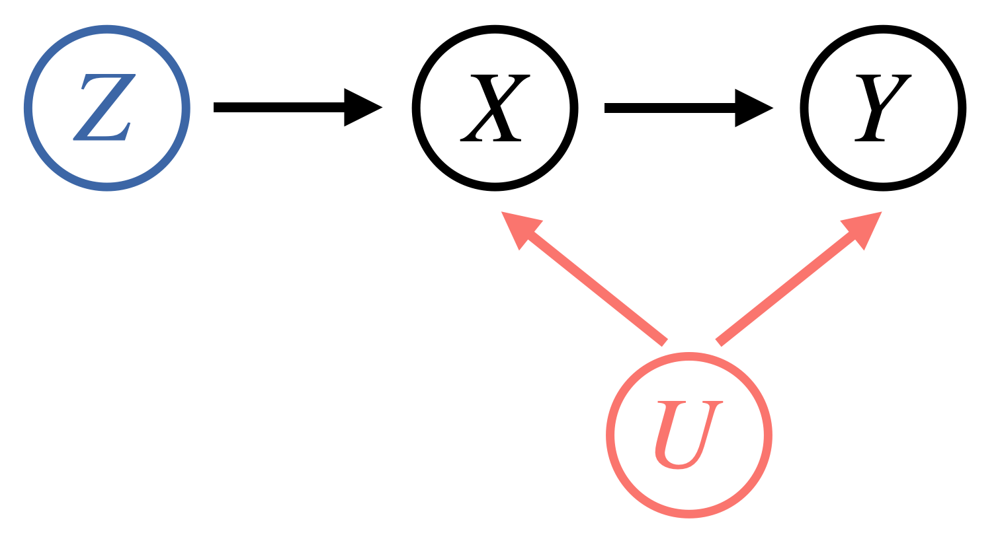
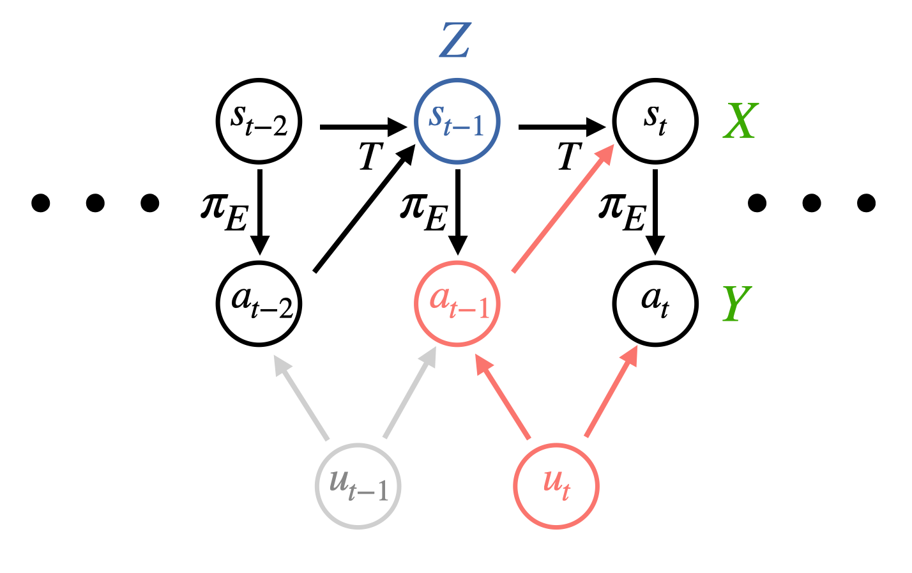

When temporally correlated noise affects a pair of expert actions, it can create spurious correlations between recorded states and actions. This is because it travels through the dynamics to affect the state at the next timestep as well as affecting the next action (red path above). Standard imitation learning algorithms like behavioral cloning might latch onto these spurious correlations and learn policies that perform poorly at test-time. We leverage modern variants of the instrumental variable technique to propose two algorithms that are able to provably match expert performance under TCN.
Abstract
We develop algorithms for imitation learning from policy data that was corrupted by temporally correlated noise in expert actions. When noise affects multiple timesteps of recorded data, it can manifest as spurious correlations between states and actions that a learner might latch on to, leading to poor policy performance. To break up these spurious correlations, we apply modern variants of the instrumental variable regression (IVR) technique of econometrics, enabling us to recover the underlying policy without requiring access to an interactive expert. In particular, we present two techniques, one of a generative-modeling flavor (DoubIL) that can utilize access to a simulator, and one of a game-theoretic flavor (ResiduIL) that can be run entirely offline. We find both of our algorithms compare favorably to behavioral cloning on simulated control tasks.
Video
Key Insights
1. Dangers of TCN in Imitation Learning
The core reason TCN is dangerous is that it introduces spurious correlations in the recorded actions that do not have their true cause in the recorded state. When TCN from a past step travels through the dynamics to influence the next state, the next state and next action are also spuriously correlated. This breaks a cardinal assumption of regression as both the inputs (states) and targets (actions) are affected by the same noise, rendering standard imitation learning approaches inconsistent. This manifests as the learner trying to reproduce the TCN, which compunds with the TCN at test time to lead to poor performance. For example, if a quadcopter flight demonstration is perturbed by TCN in the form of wind, the learner might attempt to swerve as much as the expert did, which would lead to even more swerving due to the continued influence of the wind!
2. Instrumental Variable Regression
While a queryable expert would be able to give us action labels that are not affected by TCN, this is not a realistic assumption for many domains. We instead focus on learning from observational data in the form of collected expert demonstrations. We build upon a technique from econometrics known as instrumental variable regression to denoise the inputs to our regression procedure. To do this, one conditions on an instrument $Z$: a source of random variation independent of the confounder (the shared noise between $X$ and $Y$). Graphically,
Mathematically, instead of regressing from $X \rightarrow Y$, one regresses from $X|Z \rightarrow Y|Z$. We present a unified deriviation of modern IVR techniques and derive performance bounds for them in our paper.
3. Two Algorithms for Imitation under TCN
The natural question at this point is how to apply IVR to the imitation learning problem. Our key insight is that we can leverage past states as an instrument as they are independent of future TCN! Graphically,
In math, we minimize $\mathbb{E}[\mathbb{E}[(a_{t} - \pi(s_{t})|s_{t-1}]^2]$ instead of $\mathbb{E}[(a_t - \pi(s_t))^2]$ like usual. We derive two algorithms for doing so efficiently with strong performance guarantees:
DoubIL: One first runs behavioral cloning, plugs in the proposed actions into a simulator to get fresh state draws, and then regresses from these fresh states to the recorded expert actions. Enjoys performance bound $J(\pi_E) - J(\pi) \leq c(\sqrt{\epsilon} + \sqrt{\delta})\kappa(\Pi)T^2$.ResiduIL: A purely offline algorithm that has the learner minimize an instrument-weighted residual with the weighting being chosen by an adversary. Enjoys performance bound $J(\pi_E) - J(\pi) \leq c\sqrt{\epsilon}\kappa(\Pi)T^2$.
We emphasize that standard IL algorithms like behavioral cloning have no such performance guarantees under TCN. We implement both algorithms in PyTorch and test them out on environments from the PyBullet suite. We find that we are able to significantly outperform behavioral cloning at matching denoised expert actions, cumulative reward, and generalizing to different noise distributions. We release our code below.
[Code]
Paper

Causal Imitation Learning under Temporally Correlated Noise
Gokul Swamy, Sanjiban Choudhury, J. Andrew Bagnell, Zhiwei Steven Wu
@misc{swamy2021causal,
title = {Causal Imitation Learning under Temporally Correlated Noise},
author = {Gokul Swamy and Sanjiban Choudhury and J. Andrew Bagnell and Zhiwei Steven Wu},
year = {2022},
booktitle = {Proceedings of the 39th International Conference on Machine Learning}
}Acknowledgements
This template was originally made by Phillip Isola and Richard Zhang for a colorful ECCV project, and adapted to be mobile responsive by Jason Zhang. The code we built on can be found here.